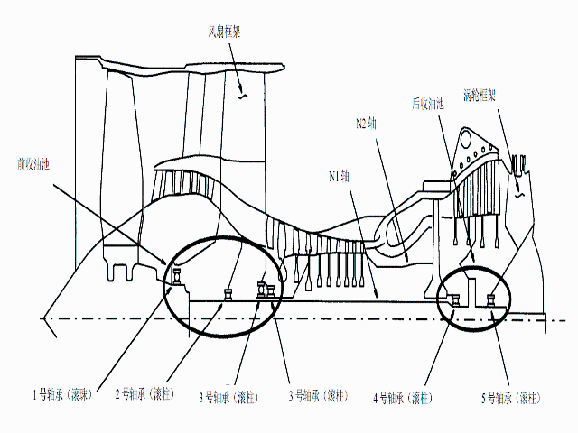

发动机的 5 个主轴承支承 N1 轴和 N2 轴。编号 1 至 5 给这些发动机主轴承作标志。滚珠轴承吸收轴的轴向的和径向的负载。滚柱轴承仅吸收径向负载。
这些发动机主轴承是在两个收油池内腔内。 两个收油池内腔是前收油池内腔和后收油池内腔。
发动机 1 号和 2 号轴承支承 N1 轴的前部
一个滚珠轴承和一个滚柱轴承组成 3 号轴承组件。 两个 3号轴承支承 N2 轴的前部。
4 号轴承支承 N2 轴的后部。
5 号轴承支承 N1 的后部。
1 号，2 号和 3 号轴承都是在前收油池内。4 号和 5 号轴承都是在后收油池内。